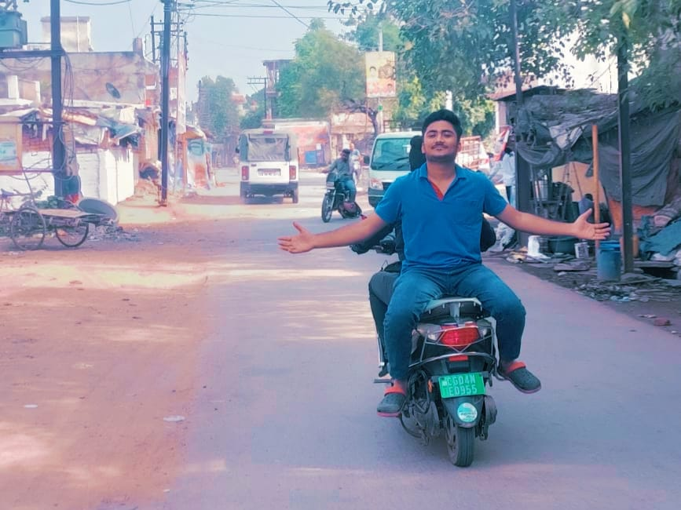
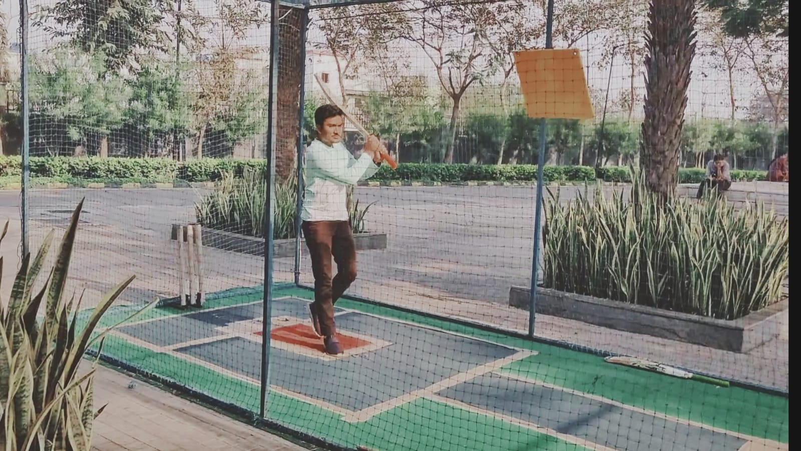
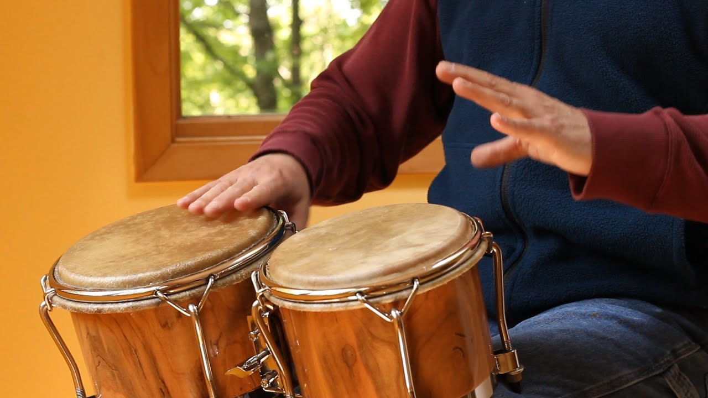
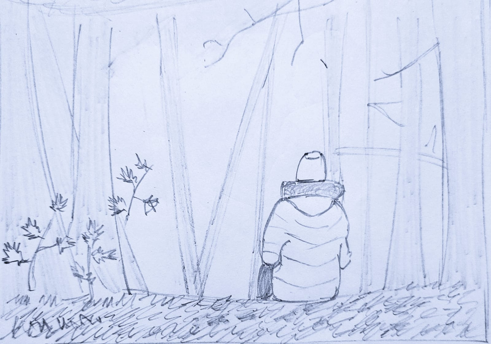

My hobbies..

In spare time, i enjoy entertaining myself with the followings:- 😎😎

𝓒𝓻𝓲𝓬𝓴𝓮𝓽
I am passionate about cricket. Watching & playing cricket is something i cant get bored of. Sachin Tendulker nd Rohit Sharma are the reasons i got my interest in cricket
𝓡𝓮𝓪𝓭𝓲𝓷𝓰 𝓑𝓸𝓸𝓴𝓼
Books are my best companion which escapes me from boredom..

𝓜𝓾𝓼𝓲𝓬
Music is a piece of art that goes in the ears straight to the heart. I love playing bongo,drums,congo.
𝓢𝓴𝓮𝓽𝓬𝓱𝓲𝓷𝓰
Sketching is a continuing source of learning rather than a string of performances While sketching, i discover what i really want to say.

𝓣𝓻𝓪𝓿𝓮𝓵𝓵𝓲𝓷𝓰
i havent been everywhere but its on my list!!
home